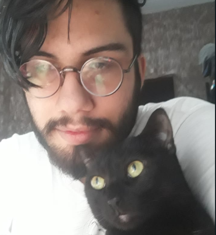

Desde 1950 testes de simular a realidade ou experiências eram desenvolvidas para diversos conceitos, porém o termo só foi cunhado em 1980 onde Jaron Lanier conciliou os termos da informática com a construção de realidades simuladas dentro do computador, criando o termo mais
vaporwave possível, o “Cyberspace”.
Esse termo entraria para o imaginário cultural em de 1984, no romance de ficção científica
Neuromancer de William Gibson.
Desde então, vários projetos em diversas áreas foram desenvolvidos, como o
Virtual Boy da Nintendo em 1995, que seria um console portátil, que mesmo sendo algo revolucionário na época, por diversos problemas flopou.
A tecnologia só voltaria a se destacar novamente no mercado do entretenimento em 2012, após o
kickstarter 2,4 milhões de dólares do Oculus Rift, lançando o primeiro produto em 2016, onde finalmente o mercado começou a se desenvolver na área.
Porém essa tecnologia vai muito além da indústria do entretenimento, sendo utilizada na área médica até a engenharia, com usos muito distintos, desde ajudar pacientes com transtornos e fobias, até mesmo treinamento de militares.
Chegamos em uma etapa da tecnologia que, como Elon Musk comentou em 2016, segundo ele a
Realidade Virtual pode ser tão real, que nada pode provar que nós não estamos já vivendo dentro de uma simulação, feita por uma outra civilização anterior a nossa

Dentro da realidade virtual existe algo que vai além de substituir o que você está vendo por um conteúdo 100% virtual.
Essa outra tecnologia é a realidade aumentada, que projeta informações (imagens, gráficos, personagens, textos) no mundo real. Um exemplo que faz bastante sucesso são os filtros do
Instagram Stories. O
Hololens e
Google Glass foram criados especialmente para uso da realidade aumentada, neste caso, o uso vai mais além, permitindo a visualização de mapas, agenda pessoal e previsão do tempo.
A realidade aumentada inclui componentes que podem interagir com o que já existe.
Utilizando essa tecnologia, vamos cada vez juntando o virtual com o real, ainda mais hoje, que podemos criar toda uma forma virtual, e imprimi-las para nossa realidade sem sair de casa.